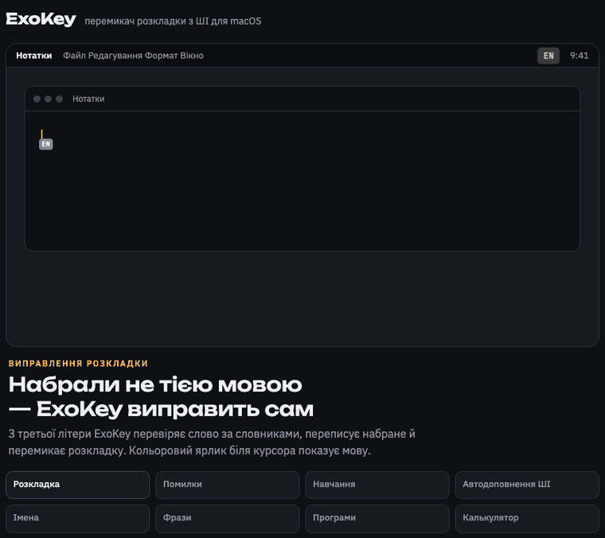

Для macOS · безкоштовно · відкритий код
ghbdsn
Пишіть, не дивлячись на розкладку
ExoKey сам виправляє текст, набраний не тією мовою, ловить помилки й підказує наступні слова. Англійська, українська, російська. Усе працює на вашому Mac.

Можливості
Дев’ять дрібниць, які економлять хвилини щодня
Приватність
Ваш текст не залишає ваш Mac
ExoKey бачить клавіші, щоб виправляти розкладку. Тому ми зробили так, щоб нікуди нічого не надсилалося.
Встановлення
Дві хвилини — і готово
Гарячі клавіші
Усе під пальцями
FAQ
Часті запитання
Спробуйте ExoKey
Безкоштовно. Якщо ExoKey вам знадобився, поставте зірку на GitHub — це допомагає проєкту рости.